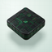
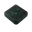
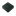
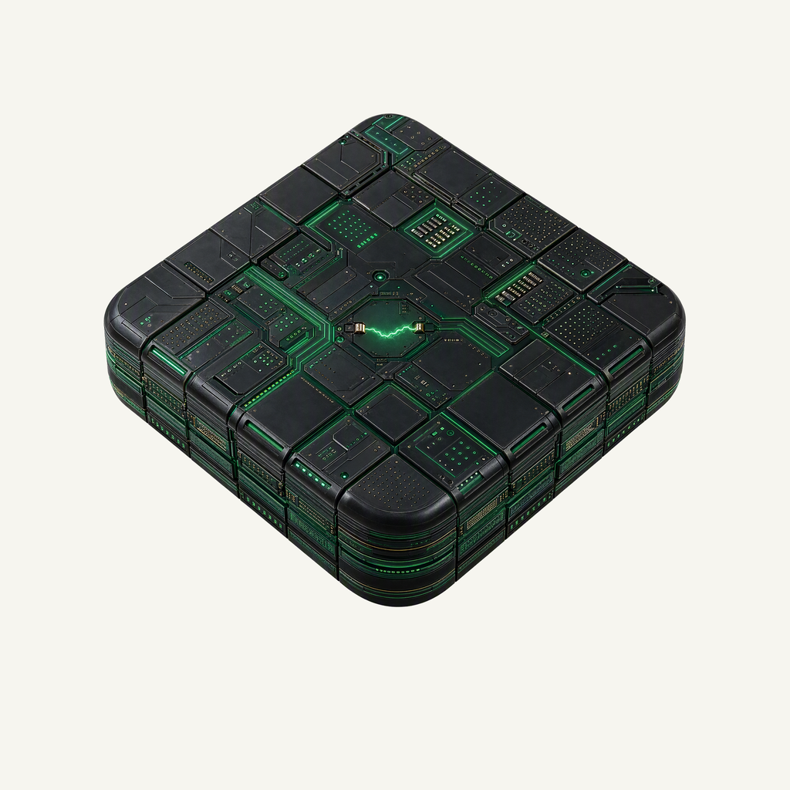
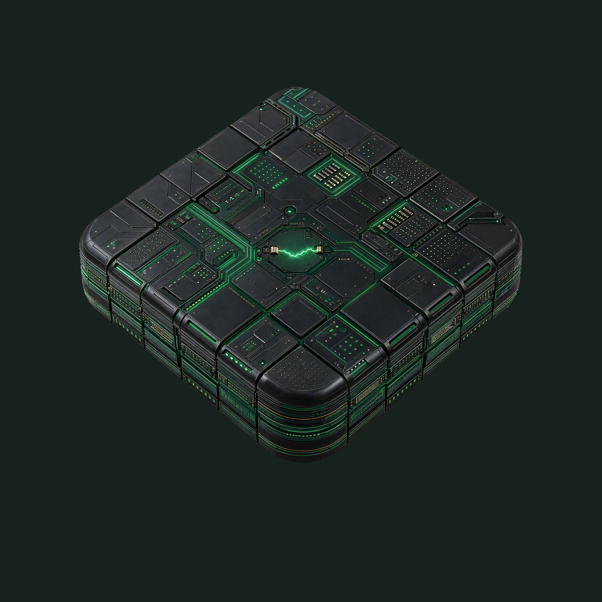

01 / Composition
A fragment of the mothership
A floating thick square deck shares Dotty’s elevated camera and whole-object safety inset. Dense circuitry fills the top and stacked sidewalls while preserving one clear solid block.
Material family · Refined identity
A small piece of a much larger machine.
Adopted redesign · finishing 01
Native 2048 × 2048

01 / Composition
A floating thick square deck shares Dotty’s elevated camera and whole-object safety inset. Dense circuitry fills the top and stacked sidewalls while preserving one clear solid block.
02 / Drawing
Near-black panels, metallic contacts and many thin circuit layers read as a physical engineered material. One small arc bridges deck contacts; the separate subtle lower spill adds light only to large presentations.
03 / Presentation
Pale mint engineering paper combines fine cells with larger backplane divisions, stepped routes and terminal vias. The geometry differs from Dotty’s drafting marks and Basalt’s architectural elevations.
Presentation tiles at 128/64 px; transparent artwork for small app and browser marks.



At 128/64 px the deck shape, green routing and layered rim remain readable. At 32/24/16 px the transparent mark resolves to a dark diamond-like block with a green circuit signature; individual vias and the small arc merge into that accent.
A designed background, with colors sampled from the exact native artwork.
Select a swatch to copy its hex value. The Matrix UI primary (#00FF41) remains a separate product color.
One transparent foreground, checked on two contrasting backgrounds.


Azure Foundry · gpt-image-2 · one request · native 2048 × 2048
Loading study text…
Accepted Dotty native raw: shared thick-square geometry, full rounded perimeter, 45-degree elevated camera and physical render quality only. Replace the checkerboard completely with the project-specific material.

{kind=link}
{kind=link}
{kind=link}
{kind=link}
{kind=link}